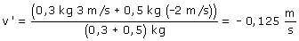
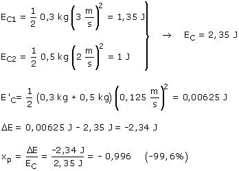

|
b) Tras un choque totalmente inelástico los cuerpos quedan unidos
Sustituyendo valores:  Las bolas se mueven juntas a 0,125 m/s hacia la izquierda Energía cinética perdida:  En el choque se pierde un 99.6% de energía cinética, el máximo posible en estas circunstancias |